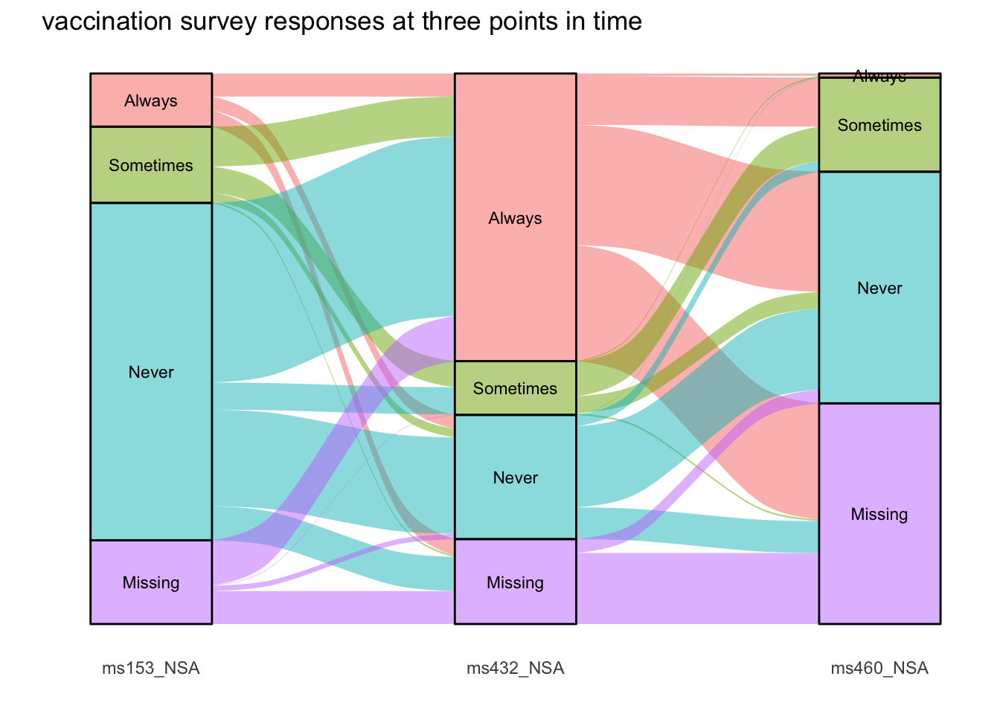

R可视化之桑吉图
本文翻译自“The graph gallery”网站,原帖文地址链接:https://www.r-graph-gallery.com/sankey-diagram.html
桑吉图(sankey diagram)使用来研究同一个变量在其不同分类中的比例或者说是流动的.实体(或者说是节点,node)一般使用长方形或者文字来表示.箭头和弧线用来表示在他们之间的流动.
0.1 使用networkD3包构建桑吉图
0.1.1 基础桑吉图绘制
可以使用两种格式的数据进行桑吉图绘制:
- connection data frame(一共三列),可以理解为长数据.
- 关联矩阵(incidence matrix),可以理解为宽数据.
0.1.1.1 使用connection data frame
connection data frame至少需要两列,分别为source和target.第三列可以用来说明该connection的数值.
library(networkD3)
library(tidyverse)## ── Attaching packages ─────────────────────────────────────── tidyverse 1.3.0 ──## ✓ ggplot2 3.3.3 ✓ purrr 0.3.4
## ✓ tibble 3.1.0 ✓ dplyr 1.0.4
## ✓ tidyr 1.1.3 ✓ stringr 1.4.0
## ✓ readr 1.4.0 ✓ forcats 0.5.0## ── Conflicts ────────────────────────────────────────── tidyverse_conflicts() ──
## x dplyr::filter() masks stats::filter()
## x dplyr::lag() masks stats::lag()links <- data.frame(
source = c("group_A","group_A", "group_B", "group_C", "group_C", "group_E"),
target = c("group_C","group_D", "group_E", "group_F", "group_G", "group_H"),
value = c(2,3, 2, 3, 1, 3)
)
head(links)## source target value
## 1 group_A group_C 2
## 2 group_A group_D 3
## 3 group_B group_E 2
## 4 group_C group_F 3
## 5 group_C group_G 1
## 6 group_E group_H 3##构建connection data frame中所有nodes的data frame
nodes <- data.frame(
name = c(as.character(links$source),
as.character(links$target)) %>% unique()
)
#然后我们需要将每个node的名字代替为其在node data frame中的位置index,注意是要从哦开始计算.
links$IDsource <- match(links$source, nodes$name) - 1
links$IDtarget <- match(links$target, nodes$name) - 1
#开始创建桑吉图
p <- networkD3::sankeyNetwork(
Links = links,
Nodes = nodes,
Source = "IDsource",
Target = "IDtarget",
Value = "value",
NodeID = "name",
sinksRight = FALSE
)
p图片时交互性的.
0.1.1.2 使用关联矩阵
关联矩阵时正方形或者长方形的.行名和列名分别为node的名称.每一个cell代表着两个node之间flow的数值.但是因为在network3D中,只能使用长数据,因此其实就是将宽数据转换为长数据.
0.1.2 另外一个例子
我们使用桑吉图来展示科学家的移民或者说是流动情况.左边代表科学家的移出国,右边代表科学家的移进国.数据来自scientific publication(https://onlinelibrary.wiley.com/doi/abs/10.1111/imre.12327).
#加载包
library(tidyverse)
library(networkD3)
# 读取数据
data <-
read.table("https://raw.githubusercontent.com/holtzy/data_to_viz/master/Example_dataset/13_AdjacencyDirectedWeighted.csv", header = TRUE)
# 讲数据转换为长数据
data_long <- data %>%
rownames_to_column(var = "name") %>%
pivot_longer(cols = -name, names_to = "key", values_to = "value") %>%
filter(value > 0) %>%
as.data.frame()
colnames(data_long) <-
c("source", "target", "value")
data_long$target <-
paste(data_long$target, " ", sep = "")
# 创建node data frame
nodes <-
data.frame(name = c(as.character(data_long$source),
as.character(data_long$target)) %>% unique()
) %>%
arrange(name) %>%
as.data.frame()
data_long$IDsource = match(data_long$source, nodes$name) - 1
data_long$IDtarget = match(data_long$target, nodes$name) - 1
# prepare colour scale
ColourScal <- 'd3.scaleOrdinal() .range(["#FDE725FF","#B4DE2CFF","#6DCD59FF","#35B779FF","#1F9E89FF",
"#26828EFF","#31688EFF","#3E4A89FF","#482878FF","#440154FF"])'
# Make the Network
sankeyNetwork(
Links = data_long,
Nodes = nodes,
Source = "IDsource",
Target = "IDtarget",
Value = "value",
NodeID = "name",
sinksRight = FALSE,
colourScale = ColourScal,
nodeWidth = 40,
fontSize = 13,
nodePadding = 20
)0.1.3 使用ggalluvial包绘制桑吉图
ggalluvial包是ggplot2的一个扩展包.可以用来绘制桑吉图.
##加载包
library(ggalluvial)
## 使用示例数据
data(vaccinations)
head(vaccinations)## survey freq subject response start_date end_date
## 1 ms153_NSA 48 1 Always 2010-09-22 2010-10-25
## 2 ms153_NSA 9 2 Always 2010-09-22 2010-10-25
## 3 ms153_NSA 66 3 Always 2010-09-22 2010-10-25
## 4 ms153_NSA 1 4 Always 2010-09-22 2010-10-25
## 5 ms153_NSA 11 5 Always 2010-09-22 2010-10-25
## 6 ms153_NSA 1 6 Always 2010-09-22 2010-10-25levels(vaccinations$response) <- rev(levels(vaccinations$response))
ggplot(vaccinations,
aes(x = survey,
y = freq,
stratum = response,
alluvium = subject,
fill = response,
label = response)) +
scale_x_discrete(expand = c(.1, .1)) +
ggalluvial::geom_flow() +
labs(x = "", y = "") +
ggalluvial::geom_stratum(alpha = .5) +
geom_text(stat = "stratum", size = 3) +
theme_bw() +
theme(legend.position = "none",
plot.background = element_blank(),
panel.border = element_blank(),
panel.grid = element_blank(),
axis.ticks = element_blank(),
axis.text.y = element_blank()) +
ggtitle("vaccination survey responses at three points in time")## Warning: The `.dots` argument of `group_by()` is deprecated as of dplyr 1.0.0.
我们在对该包做一个详细的讲解.
0.1.3.1 冲积图(Alluvial diagrams)的结构
使用ggalluvial包绘制的图称之为冲积图(Alluvial diagrams).我们以上面的例子图为例,来进行解释.
X轴代表着数据流动的分类.比如上图中,一共有三类,也就是ms153_NSA,ms432_NSA和ms460_NSA.
而X轴的每一类又会分为不同的分组,称之为地层(strata).在我们这个例子中,每一类都分成了四组,Missing,Never,Sometimes和Always.
然后我们再看每一列,每一列的每一个分组都会被图形分割,这称之为冲积(alluvia).在这个例子中,每个冲积的宽度(也就是在Y轴上range)代表着分类的该组分到下一个分类某个分组的数据的多少.当然,冲积的颜色用来代表不同的分类.
两个相邻的分类之间的连接的冲积称之为flow.
我们对这个图的结构进行详细的理解之后,我们在来看如何使用galluvial包绘制冲积图.
0.1.3.2 所需要的数据类型
跟network3D包一样,ggalluvial包也可以使用宽数据和长数据.我们使用UCBAdmissions数据为例进行说明.
0.1.3.2.1 宽数据
UCBAdmissions数据一共有4列.
Xiaotao Shen
Postdoctoral Research Fellow
Metabolomics, Multi-omics, Bioinformatics, Systems Biology.